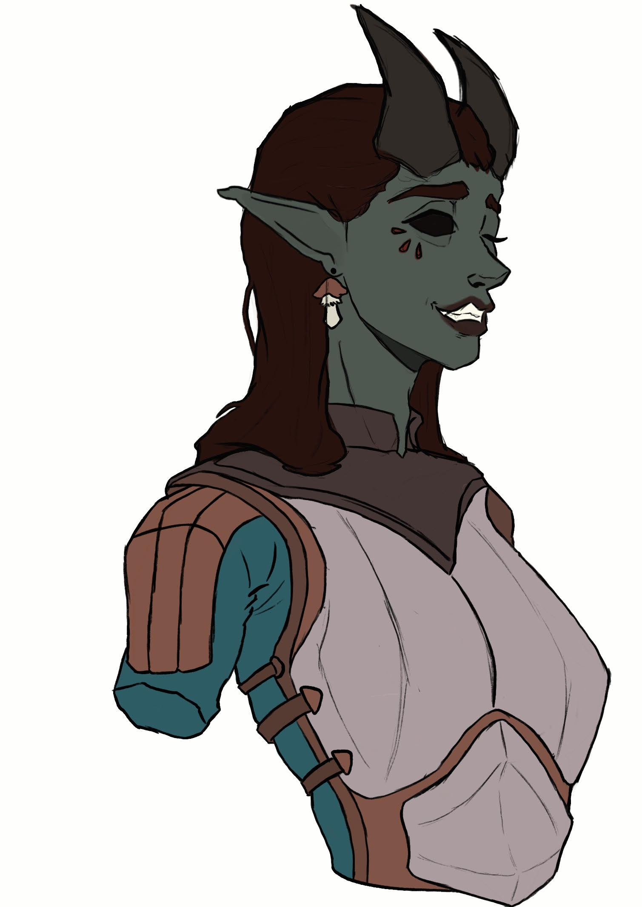
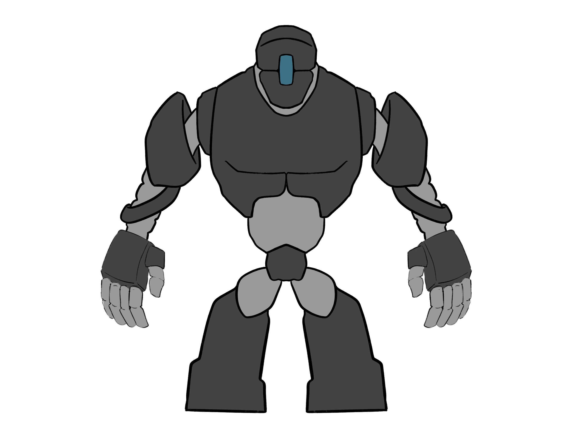

Erebo
Contenuti:
Il mondo di Talagi si divide in tre piani distinti, ciascuno con caratteristiche che influenzano la vita e la storia del pianeta in modo unico e complesso. L’Erebo, il più oscuro di questi, si estende sotto il Talassis, il piano materiale. È un luogo di misteri, dove il tempo stesso sembra distorto, e la magia fluisce con potenza incontrollata. Le sue profondità contengono antiche rovine, creature mutanti e piante rare, tutte adattate a vivere in un ambiente senza luce e dominato dal potere arcano.
L’Erebo è un labirinto di caverne interconnesse, canyon sotterranei, e vasti laghi neri che si snodano nelle viscere del Talassis. Questo mondo oscuro è caratterizzato da diverse regioni, ciascuna con le proprie peculiarità geologiche e goemiche(magiche). Alcuni di questi luoghi sono dimore di antiche città sotterranee, costruite da popoli perduti. Altri ospitano potenti fonti di energia magica che distorcono la realtà stessa.
In alcune delle caverne più ampie si trovano i resti di grandi città perdute, costruite da razze antiche come i Quentuv (drow), i Druzmhiir (tiefling bianchi) e i Tyrgaals (giganti del sottosuolo) . Queste città furono costruite in epoche lontane, scolpite direttamente nella roccia o forgiate con materiali magici rari, come il Vherossium, un metallo che assorbe la luce. Molti di questi insediamenti sono ormai abbandonati, preda di creature che si sono impossessate delle strutture decadenti. Tra i luoghi più spettacolari vi sono gli Antri Cristallini, cavità dove le rocce hanno cristallizzato a contatto con l’energia magica del piano, creando enormi colonne di quarzo luminescente. In queste caverne, l'atmosfera è satura di un bagliore freddo e pallido, che illumina la strada agli esploratori e riflette in intricate formazioni geometriche.
L'Erebo non è costituito solo da caverne naturali; ci sono anche estesi labirinti sotterranei creati dalle Grandi Bestie delle Profondità, creature gigantesche chiamate Grovliyr, che hanno scavato le loro tane per millenni. Questi tunnel, ora deserti o abitati da nuove forme di vita, si estendono per chilometri, attraversando interi continenti e portando a luoghi proibiti o sigillati da eoni.
Una delle meraviglie più uniche dell'Erebo sono i cosiddetti "Mari Sottosopra". Questi sono vasti oceani sotterranei sospesi, creati dall'enorme pressione esercitata dagli oceani superiori del Talassis. In alcune aree dell'Erebo, le caverne si trovano sotto queste masse d’acqua, che formano delle cupole ribaltate. Gocce d’acqua enormi si staccano dalle "volte marine" e cadono nelle profondità, creando laghi sotterranei o fiumi che scorrono lenti e inesorabili. La fauna di questi mari rovesciati è perlopiù sconosciuta, ma si narra di creature colossali, simili a leviatani, che vi abitano, capaci di spostarsi tra i due piani.
La vita nell'Erebo si è adattata alla sua oscurità e ai suoi pericoli. Alcune creature hanno sviluppato abilità sovrannaturali, altre si affidano alla forza bruta per sopravvivere. La varietà di specie presenti è tanto vasta quanto bizzarra, con animali che sembrano sfidare le leggi della biologia comunemente note sul piano materiale. Bestie Soprannaturali e Creature Mutanti Una delle razze più temute dell’Erebo sono gli Othurrax, demoni antropomorfi con zoccoli caprini e corna ricurve, simili a caproni da incubo. Questi esseri, tutt’altro che primitivi, sono dotati di una brutale intelligenza e di una crudeltà senza pari. I loro rituali magici spesso coinvolgono sacrifici e la manipolazione di antiche energie abissali. Gli Othurrax, infatti, dominano molte delle regioni più inospitali dell’Erebo, erigendo città di ossa e rocce nere che si fondono con l'oscurità circostante. I Thruv'kos sono un'altra delle minacce costanti nell’Erebo. Si tratta di colossi dalle fattezze vagamente umanoidi, ricoperti di stalattiti viventi che crescono direttamente dal loro corpo. Queste creature sono lente, ma incredibilmente resistenti. Si muovono come montagne in marcia e spesso fungono da guardiani di antichi passaggi dimenticati o di tesori nascosti.
Tra le aberrazioni più note dell’Erebo vi sono i **Vormuhr**, creature eteree che si nascondono tra le ombre e vivono nutrendosi della paura. I Vormuhr sono invisibili agli occhi normali e possono essere percepiti solo da coloro che possiedono poteri magici o particolari artefatti. Quando attaccano, si materializzano come ombre fluttuanti, simili a drappi di seta scura, e risucchiano la vitalità delle loro vittime.
La Vegetazione Magica La flora dell’Erebo è altrettanto misteriosa e pericolosa. Senza la luce del sole, la vegetazione si è evoluta in forme uniche, capaci di sfruttare la magia del piano per crescere e prosperare.
L’Erebo è intriso di magia, ma non di una magia prevedibile e controllabile come quella del Talassis. Qui la magia è caotica, instabile, e segue le proprie regole. Nelle aree più profonde, esistono **Varchi del Vuoto**, fessure dimensionali attraverso cui l’energia magica scorre liberamente, creando distorsioni spazio-temporali. Alcuni dicono che questi varchi siano collegati direttamente alla Coelistia, il piano delle divinità, o ad altre dimensioni sconosciute. I **Nodi Arcani** sono punti di concentrazione di potere che deformano la realtà circostante. In questi luoghi, le leggi della fisica sembrano non esistere: la gravità può invertirsi, il tempo può rallentare o accelerare, e incantesimi banali possono scatenare reazioni catastrofiche.
Prima della grande catastrofe dei 13 Raggi Divini, l’Erebo era solo una leggenda per gli abitanti del Talassis. Tuttavia, dopo la distruzione dei continenti, molte razze si rifugiarono nell’Erebo, cercando riparo dalla devastazione. Durante i "200 Anni di Tenebra", gli abitanti dell’Erebo prosperarono e diedero vita a culture uniche e complesse, sviluppando tecnologie e magie che non esistono altrove. Tra le civiltà più influenti vi erano i **Druzmhiir**, maestri della forgiatura e della manipolazione magica dei metalli. Costruirono macchine viventi, alimentate da fonti magiche inesauribili, e crearono alcune delle armi più potenti mai conosciute. Tuttavia, la loro civiltà crollò per ragioni sconosciute, e i segreti delle loro forge sono stati perduti.

|

|

|
|
|
|
|
Esempio di Quentuv
Esempio di Tiefling
Esempio di Costrutto